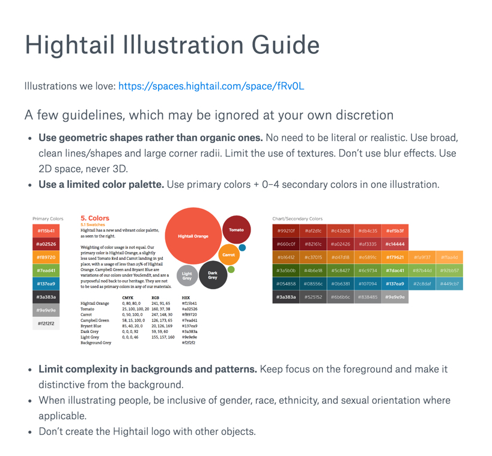
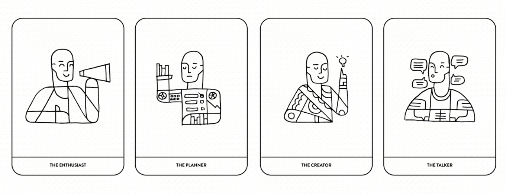
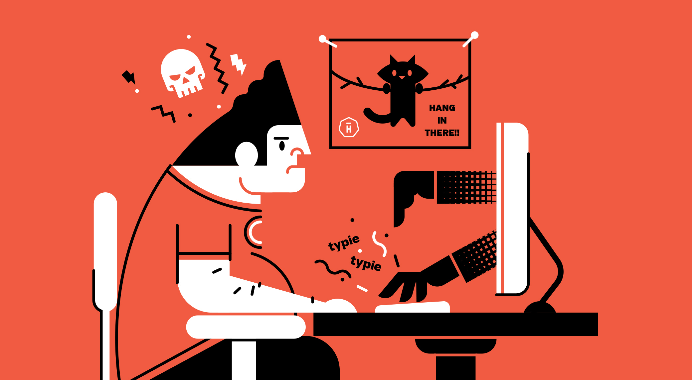
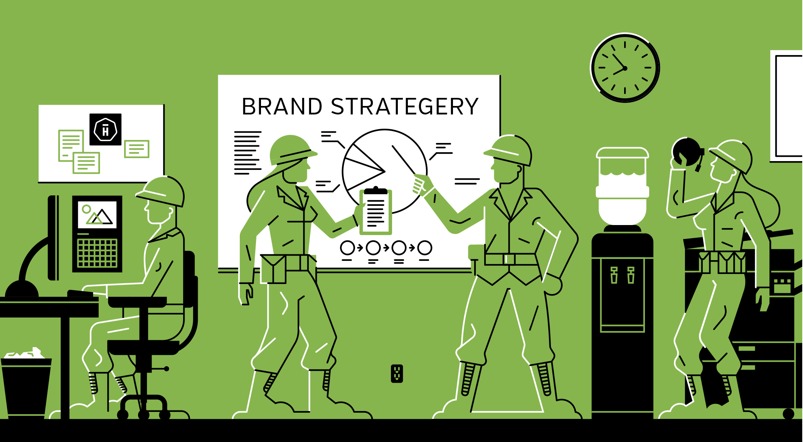
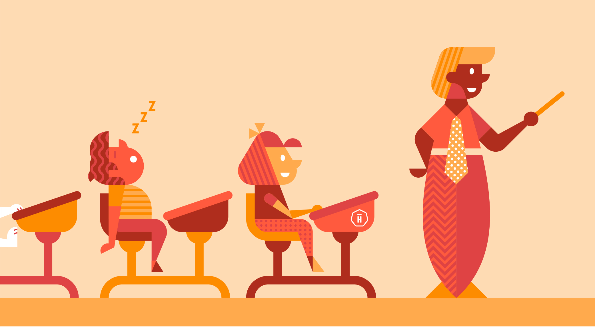
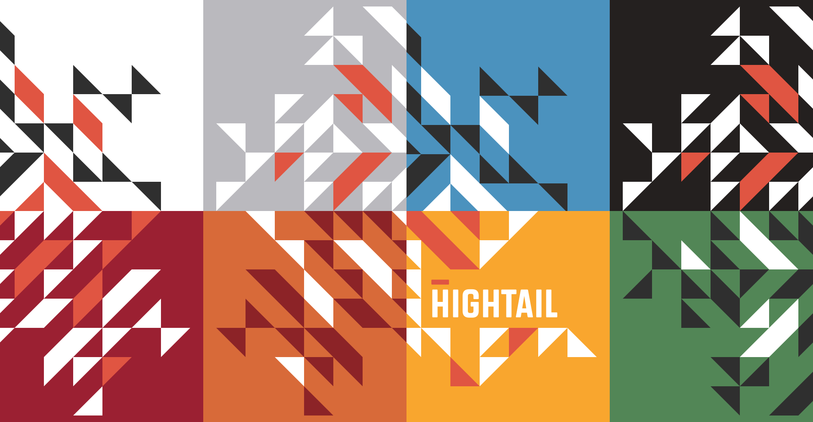
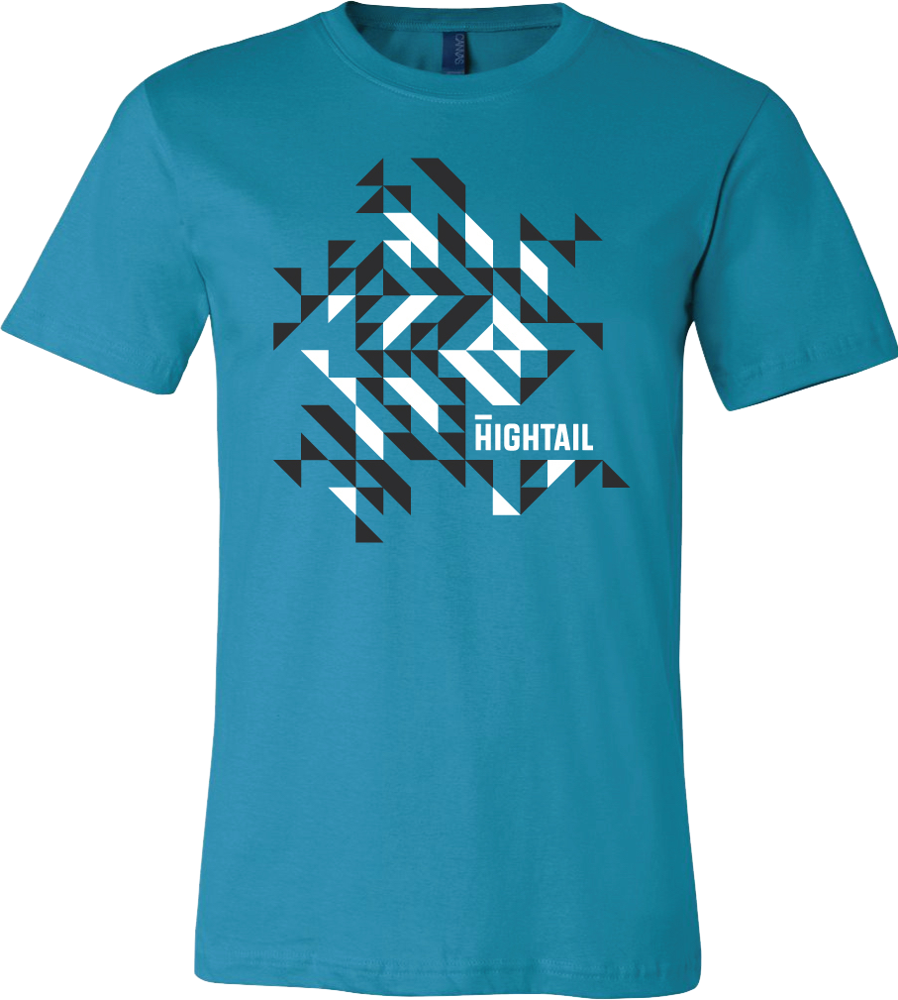
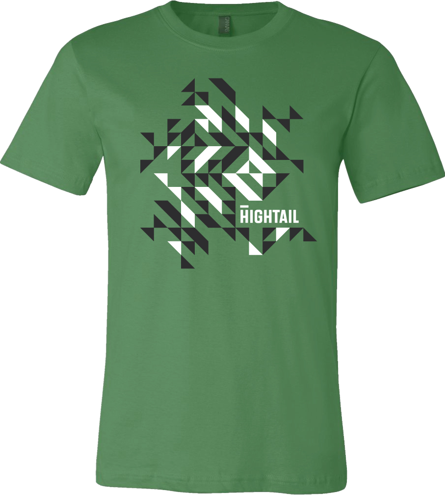
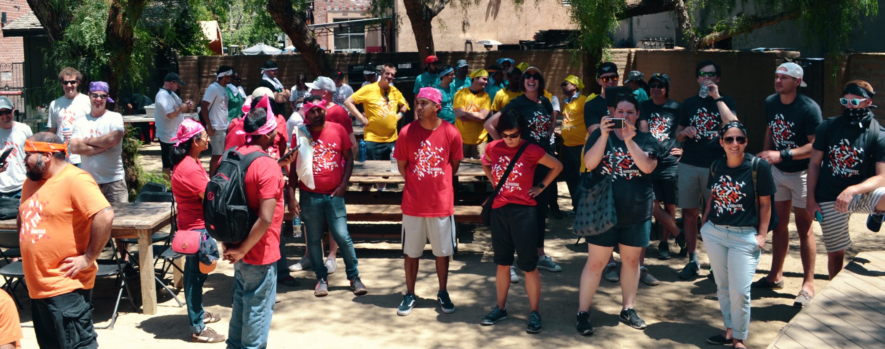
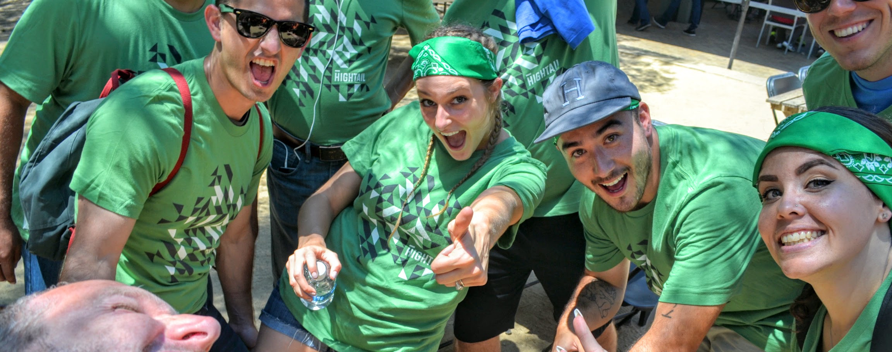

Art Direction & Branding
Company
Hightail, a feedback and project management tool for creative agencies and teams.
Role & Responsibilities
At the end of 2015, I expressed to our VP of design, Bill, that I was interested in being involved in more illustration work at Hightail. Our marketing team works with several contractors for marketing design, and I took on art direction for their illustrations, working closely with our contractors and senior brand marketing writer Colm.
Illustration Style Guide for Marketing
The first step in leading art direction for our illustrators was creating an illustration-specific style guide.
While our existing branding guidelines were thorough, they were written in mind more for copywriting and general print/web design — not so much for miscellaneous marketing collateral. I put together an illustration style guide as an addendum to our branding guideline.
After discussing with Bill and the marketing team what we liked best about our current illustration style, I compiled a guide for our contract illustrators that included illustration-specific guidelines, along with elements from our current branding guide.

Putting the Style Guide in Practice
The illustrator I’ve worked most closely with has been the amazing Luke Bott, who was completely receptive to these new guidelines, even after having few constraints to work with previously.
Working with Luke is a dream, and all it takes to get started on a new illustration is a short back-and-forth with Colm to generate ideas, then a quick email to Luke gets us a great initial sketch.

Working in Hightail through 1–2 feedback cycles usually gets us to final, while I generally give input on general imagery and when the rules of the style guide might be bent. The new style guide has been great at making our new illustrations consistent across the board.



Internal Branding for Hightail
Aside from art direction, I’ve also designed ephemera for internal Hightail events, working closely with our HR team.
The Alliance Manager & Employee Booklets
At Hightail, we use the Alliance framework to guide working relationships between managers and their employees to further career growth. For 2016, HR wanted to create booklets that tailored the Alliance’s manager and employee worksheets for Hightail.


2016 Summer Picnic
For our summer picnic, we competed in a company-wide scavenger hunt. Each of our eight teams needed a different color t-shirt. We wanted shirts that didn’t explicitly commemorate the event and could be worn year-round.

 

